The photo + screen albums
Actual hardware. Actual interfaces.
Credited hardware photographs, publisher product images and software screen captures. Sources, licenses and image receipts.
Proxmark manual in the wild
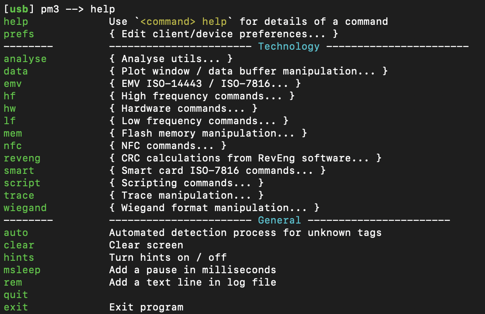
Proxmark3 RDV4 help / 2021 interface
Turbospok · CC BY-SA 4.0 · Image creditsRead command groups and the help hint first. This is a historical screenshot, not a recipe or a claim about your installed version.
Data + interface gallery
Seven reproducible research figures and three publisher tool screenshots. Synthetic results and external assets are labeled.
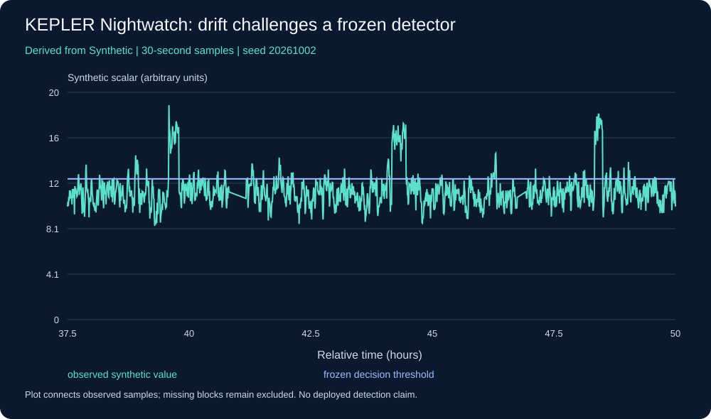
Synthetic telemetry experiment · Methods, units and limits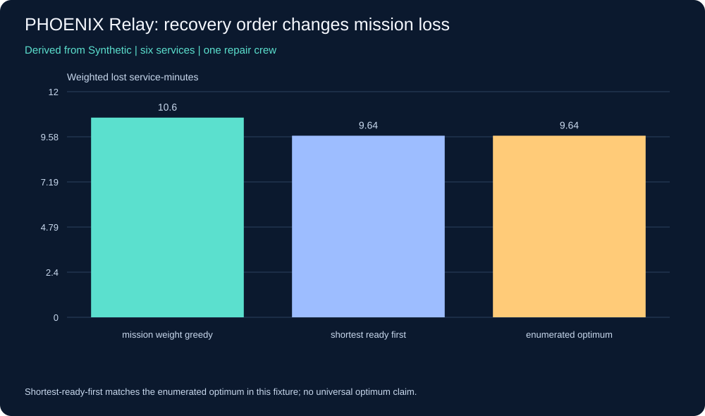
Synthetic recovery experiment · Methods, units and limits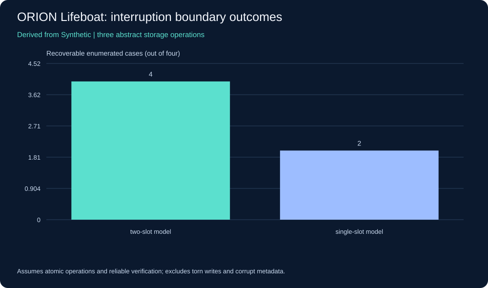
Synthetic firmware evidence experiment · Methods, units and limits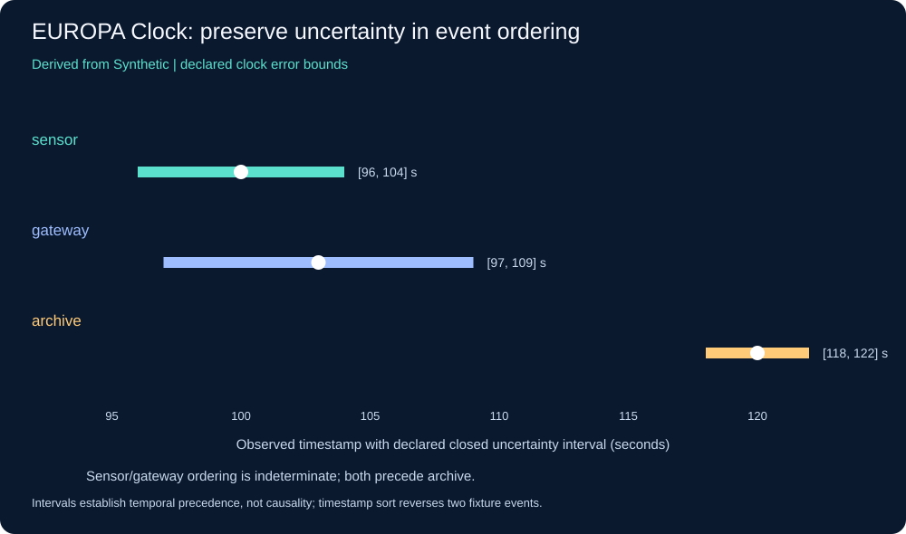
Synthetic clock alignment experiment · Methods, units and limits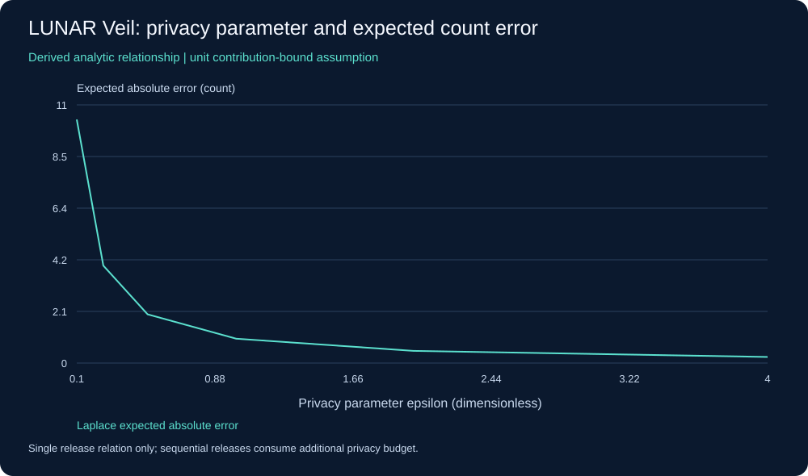
Synthetic privacy experiment · Methods, units and limits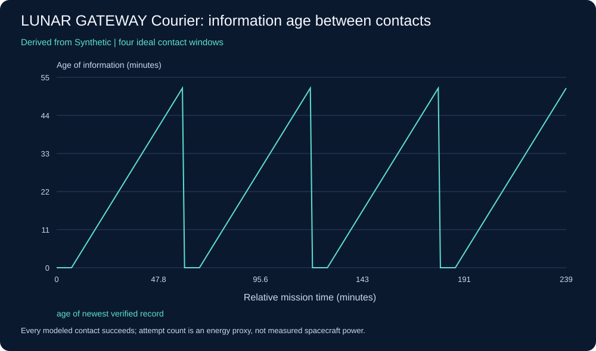
Synthetic contact experiment · Methods, units and limits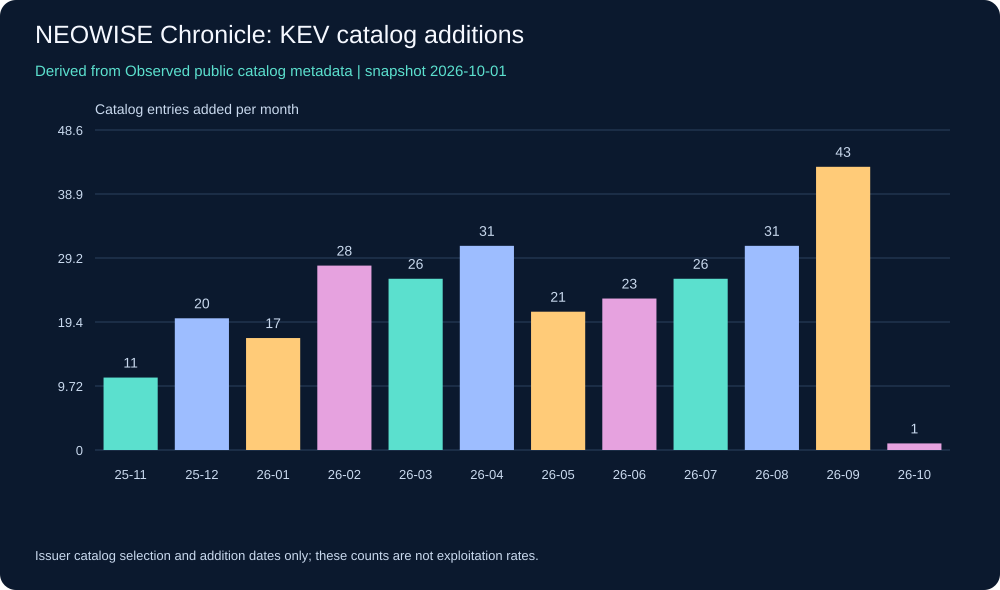
Pinned CISA known-exploited-vulnerability metadata snapshot · Methods, units and limits Wireshark / three panes · Publisher image; rights remain with publisher. Documentation ↗ · Reading guide + hash receipts
Wireshark / three panes · Publisher image; rights remain with publisher. Documentation ↗ · Reading guide + hash receipts Burp / HTTP history · Publisher image; rights remain with publisher. Documentation ↗ · Reading guide + hash receipts
Burp / HTTP history · Publisher image; rights remain with publisher. Documentation ↗ · Reading guide + hash receipts Burp / intercepted request · Publisher image; rights remain with publisher. Documentation ↗ · Reading guide + hash receipts
Burp / intercepted request · Publisher image; rights remain with publisher. Documentation ↗ · Reading guide + hash receiptsDiagram collection
 RED / BLUE / PURPLE · conceptual
RED / BLUE / PURPLE · conceptual READ A PACKET · conceptual
READ A PACKET · conceptual READ THE MANUAL · conceptual
READ THE MANUAL · conceptual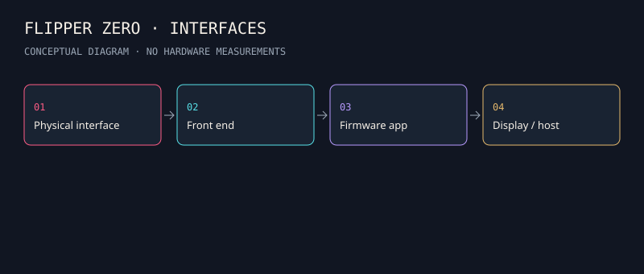
FLIPPER ZERO · INTERFACES · conceptual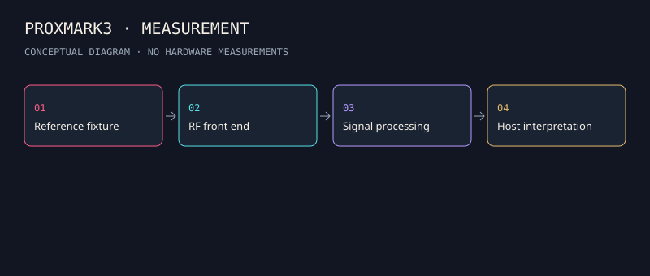
PROXMARK3 · MEASUREMENT · conceptual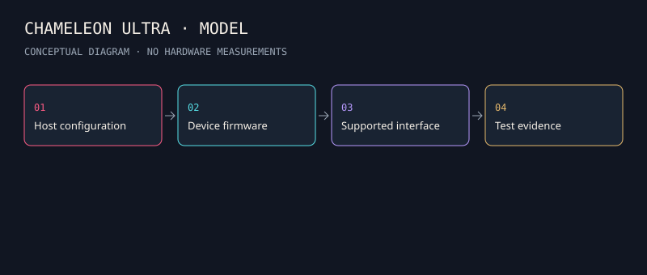
CHAMELEON ULTRA · MODEL · conceptual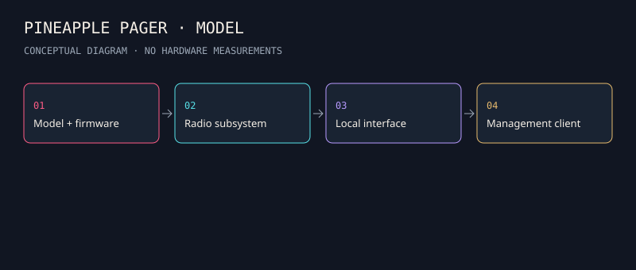
PINEAPPLE PAGER · MODEL · conceptual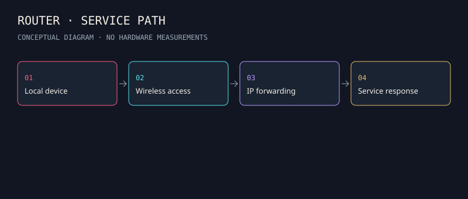
ROUTER · SERVICE PATH · conceptual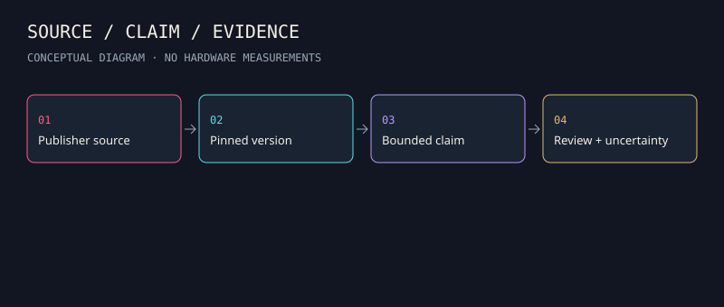
SOURCE / CLAIM / EVIDENCE · conceptual A GRADUATE RESEARCH LOOP · conceptual
A GRADUATE RESEARCH LOOP · conceptual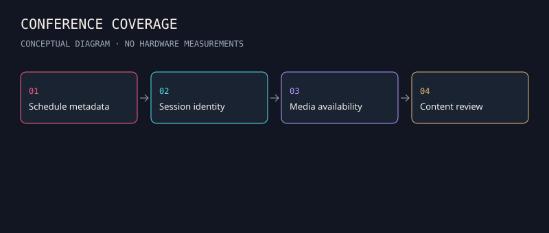
CONFERENCE COVERAGE · conceptual